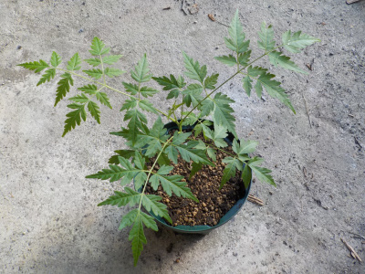
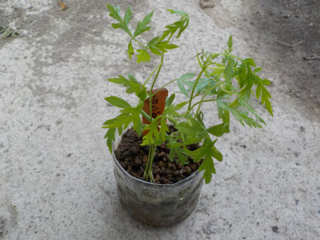
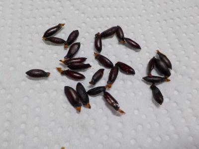
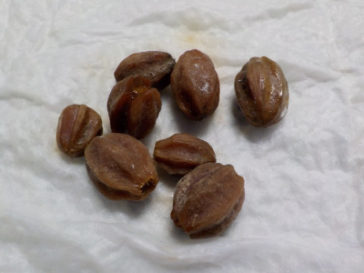
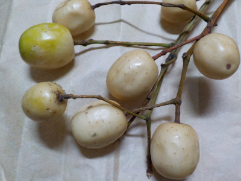

センダンの鉢を大きくしました。
2021/06/20

今までの鉢が小さく感じたので、一番大きくなった1本だけ鉢を大きくしました。
何本も育てるスペースはないので、他の苗は小さい鉢のまま置いておきます。
思い切って整理した方がいい気がしますが、決断できませんでした。
2021/06/20

今までの鉢が小さく感じたので、一番大きくなった1本だけ鉢を大きくしました。
何本も育てるスペースはないので、他の苗は小さい鉢のまま置いておきます。
思い切って整理した方がいい気がしますが、決断できませんでした。
2020/07/04

種は沢山あってんですが、ちゃんと発芽したのは6本だけでした。
ひょろひょろで弱々しい苗です。
2020/05/01

栴檀の種はこんなのでした。
殻を割って種を出したんですが、殻がとても硬かったです。
自然に殻を割って発芽する力は凄いですね。
凄いけど家では発芽しなかったので、人工的に取り出しました。
発芽条件って何なんでしょうね。
2020/03/19

果肉を取り除いたセンダンの種です。
殻はまだガチガチに硬いです。
2020/01/26

出雲大社にセンダンの実が沢山落ちていたので、少し拾って帰りました。
育ててみようと思います。
畑仕事じゃないよ。